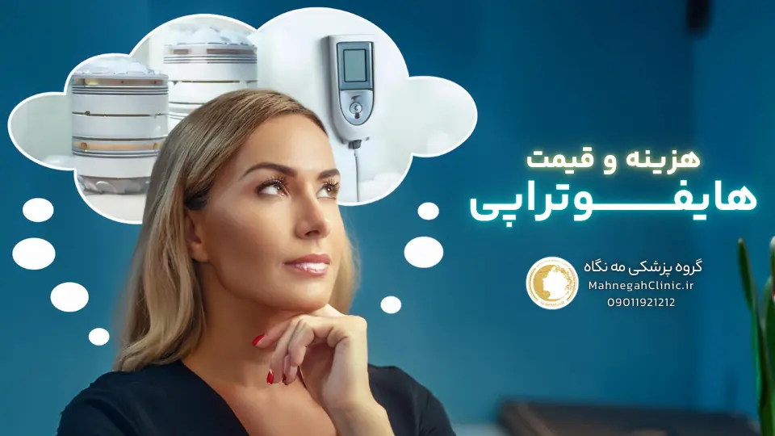

خانه / مجله / جوانسازی پوست
هزینه هایفوتراپی غبغب در سعادت آباد - راهنمای جامع

هایفوتراپی غبغب چیست و چگونه عمل میکند؟
قبل از اینکه شروع کنیم بهت بگم که اگر اینجا کلیک کنی و اسم قشنگت رو به من بگی، 10 درصد تخفیف مازاد روی هزینه هایفوتراپی غبغب در سعادت آباد دریافت میکنی!
غبغب یا چربی زیر چانه، یکی از مشکلاتی است که میتواند زیبایی صورت را تحت تأثیر قرار دهد. هایفوتراپی، یک روش غیرتهاجمی و موثر برای رفع غبغب است که با استفاده از امواج اولتراسوند متمرکز، به تحریک کلاژنسازی و لیفت پوست کمک میکند. در این بخش، به تعریف هایفوتراپی و مکانیسم عملکرد آن در رفع غبغب میپردازیم.
تعریف هایفوتراپی و کاربرد آن در رفع غبغب
هایفوتراپی (High-Intensity Focused Ultrasound) یا HIFU، یک روش درمانی غیرجراحی است که با استفاده از امواج اولتراسوند متمرکز با شدت بالا، به لایههای عمیق پوست نفوذ کرده و باعث ایجاد حرارت کنترلشده در بافت هدف میشود. این حرارت باعث انقباض و سفت شدن فیبرهای کلاژن موجود در پوست شده و در عین حال، فرآیند کلاژنسازی جدید را تحریک میکند. این مکانیسم، به لیفت پوست و کاهش چین و چروکها کمک میکند.
در مورد غبغب، هایفوتراپی با هدف قرار دادن چربی زیر چانه، باعث تخریب سلولهای چربی و در نتیجه کاهش حجم غبغب میشود. همچنین، با تحریک کلاژنسازی در این ناحیه، پوست زیر چانه سفتتر شده و ظاهر آن بهبود مییابد.
مکانیسم عملکرد هایفوتراپی در تحریک کلاژنسازی و لیفت پوست
امواج اولتراسوند متمرکز مورد استفاده در هایفوتراپی، با نفوذ به لایههای عمیق پوست، باعث ایجاد نقاط حرارتی میکروسکوپی در بافت هدف میشوند.
این نقاط حرارتی، دمایی در حدود 60-70 درجه سانتیگراد ایجاد میکنند که برای تخریب سلولهای چربی و تحریک کلاژنسازی ایدهآل است.
انرژی حرارتی ناشی از هایفوتراپی، باعث انقباض فوری فیبرهای کلاژن موجود در پوست میشود که منجر به لیفت و سفت شدن پوست میشود. همچنین، این حرارت، فرآیند کلاژنسازی جدید را در پوست تحریک میکند.
کلاژن، پروتئینی است که به پوست استحکام و قابلیت ارتجاعی میبخشد. با افزایش تولید کلاژن، پوست ضخیمتر، سفتتر و جوانتر به نظر میرسد.
در نتیجه، هایفوتراپی با ترکیب تخریب سلولهای چربی و تحریک کلاژنسازی، به طور موثری غبغب را کاهش داده و ظاهر پوست زیر چانه را بهبود میبخشد.

چرا هایفوتراپی برای رفع غبغب انتخاب مناسبی است؟
هایفوتراپی به عنوان یک روش غیرتهاجمی و موثر در رفع غبغب، مزایای بسیاری نسبت به سایر روشهای درمانی دارد. در این بخش، به بررسی این مزایا و نتایج قابل انتظار از هایفوتراپی غبغب میپردازیم تا به شما در تصمیمگیری بهتر کمک کنیم.
مزایای هایفوتراپی نسبت به سایر روشهای رفع غبغب
- غیرتهاجمی بودن: هایفوتراپی یک روش غیرجراحی است و نیازی به برش، بخیه یا بیهوشی ندارد. این به معنای عدم وجود درد، خونریزی و دوره نقاهت طولانی است. شما میتوانید بلافاصله پس از انجام هایفوتراپی به فعالیتهای روزمره خود بازگردید.
- ایمن و کمعارضه: هایفوتراپی یک روش ایمن و تأیید شده توسط سازمان غذا و داروی آمریکا (FDA) است. عوارض جانبی آن معمولاً خفیف و موقتی هستند و شامل قرمزی، تورم و کبودی میشوند که طی چند روز برطرف میشوند.
- موثر و ماندگار: هایفوتراپی غبغب نتایج قابل توجه و ماندگاری را ارائه میدهد. با از بین بردن سلولهای چربی و تحریک کلاژنسازی، غبغب به طور قابل توجهی کاهش مییابد و خط فک بهبود مییابد. این نتایج میتوانند تا چند سال باقی بمانند.
- بدون نیاز به زمان بهبودی: برخلاف روشهای جراحی، هایفوتراپی نیازی به زمان بهبودی ندارد. شما میتوانید بلافاصله پس از درمان به فعالیتهای روزمره خود بازگردید.
- قابل انجام برای انواع پوست: هایفوتراپی برای انواع پوست مناسب است و محدودیتی در این زمینه ندارد.
- افزایش اعتماد به نفس: با رفع غبغب و بهبود خط فک، هایفوتراپی میتواند به طور قابل توجهی اعتماد به نفس شما را افزایش دهد و باعث شود احساس بهتری نسبت به ظاهر خود داشته باشید.
نتایج قابل انتظار از هایفوتراپی غبغب
- کاهش حجم غبغب: هایفوتراپی با تخریب سلولهای چربی در ناحیه غبغب، باعث کاهش حجم و اندازه آن میشود.
- سفت شدن و لیفت پوست: با تحریک کلاژنسازی، پوست زیر چانه سفتتر و لیفت میشود که منجر به بهبود ظاهر غبغب و خط فک میشود.
- جوانسازی پوست: افزایش تولید کلاژن باعث جوانسازی پوست و کاهش چین و چروکهای ریز در ناحیه غبغب میشود.
- نتایج طبیعی و تدریجی: نتایج هایفوتراپی غبغب به تدریج و طی چند هفته تا چند ماه پس از درمان ظاهر میشوند. این نتایج طبیعی و ماندگار هستند.
در کل، هایفوتراپی یک روش ایمن، موثر و غیرتهاجمی برای رفع غبغب است که مزایای بسیاری نسبت به سایر روشها دارد. اگر به دنبال یک راه حل بدون جراحی و با نتایج ماندگار برای رفع غبغب هستید، هایفوتراپی میتواند گزینه مناسبی برای شما باشد.

عوامل موثر بر هزینه هایفوتراپی غبغب در سعادت آباد
هزینه هایفوتراپی غبغب در سعادت آباد تحت تأثیر عوامل مختلفی قرار میگیرد. شناخت این عوامل به شما کمک میکند تا درک بهتری از قیمتها داشته باشید و بتوانید بهترین تصمیم را برای خود بگیرید. در این بخش، به بررسی دو عامل اصلی موثر بر هزینه هایفوتراپی غبغب میپردازیم.
تخصص و تجربه پزشک
یکی از عوامل مهم در تعیین هزینه هایفوتراپی غبغب، تخصص و تجربه پزشک است. پزشکانی که دارای تخصص و تجربه بیشتری در زمینه هایفوتراپی هستند، معمولاً هزینههای بالاتری را برای خدمات خود دریافت میکنند.
این به دلیل دانش و مهارت بالای آنها در انجام این روش درمانی و ارائه نتایج مطلوب به بیماران است. انتخاب یک پزشک متخصص و باتجربه، اگرچه ممکن است هزینه بیشتری داشته باشد، اما میتواند به شما اطمینان دهد که درمان شما به بهترین شکل ممکن انجام میشود و نتایج بهتری را به همراه خواهد داشت.
نوع دستگاه هایفو مورد استفاده
دستگاههای هایفو مختلفی در بازار وجود دارند که از نظر کیفیت، تکنولوژی و کارایی متفاوت هستند. برخی از دستگاهها پیشرفتهتر و مجهز به تکنولوژیهای جدیدتری هستند که میتوانند نتایج بهتری را ارائه دهند.
این دستگاهها معمولاً هزینههای بالاتری دارند و در نتیجه، هزینه هایفوتراپی با استفاده از آنها نیز بیشتر خواهد بود. انتخاب دستگاه مناسب، بستگی به نیازها و شرایط شما دارد. پزشک متخصص میتواند به شما در انتخاب بهترین دستگاه برای رفع غبغب کمک کند.
علاوه بر این دو عامل، عوامل دیگری نیز میتوانند بر هزینه هایفوتراپی غبغب تأثیر بگذارند، از جمله:
- موقعیت کلینیک: کلینیکهای زیبایی واقع در مناطق پر رفت و آمد و با دسترسی آسان، معمولاً هزینههای بالاتری دارند.
- تعداد جلسات درمانی: تعداد جلسات مورد نیاز برای رفع غبغب، بسته به شدت و میزان غبغب متفاوت است. هرچه تعداد جلسات بیشتر باشد، هزینه کلی درمان نیز افزایش مییابد.
- خدمات اضافی: برخی کلینیکها ممکن است خدمات اضافی مانند ماساژ یا مراقبتهای پوستی را در کنار هایفوتراپی ارائه دهند که میتواند هزینه را افزایش دهد.
با در نظر گرفتن این عوامل، میتوانید بهترین تصمیم را برای انجام هایفوتراپی غبغب در سعادت آباد بگیرید و از نتایج آن لذت ببرید.
هزینه هایفوتراپی غبغب در سعادت آباد چقدر است؟
یکی از سوالات رایج افرادی که به دنبال رفع غبغب با هایفوتراپی هستند، این است که هزینه هایفوتراپی غبغب در سعادت آباد چقدر است؟ در این بخش، به بررسی محدوده قیمت هایفوتراپی غبغب در سعادت آباد و مقایسه آن با سایر روشهای رفع غبغب میپردازیم.
بررسی محدوده قیمت هایفوتراپی غبغب در سعادت آباد
هزینه هایفوتراپی غبغب در سعادت آباد، مانند سایر مناطق، تحت تأثیر عوامل مختلفی قرار میگیرد که در بخش قبلی به آنها اشاره کردیم.
با این حال، میتوان یک محدوده قیمت کلی برای این روش درمانی در سعادت آباد ارائه داد.
در حال حاضر (سال 1403)، هزینه هایفوتراپی فقط غبغب در سعادت آباد معمولاً بین 1.5 تا 3 میلیون تومان متغیر است. اما اگر صورت و غبغب با هم انجام بگیرد میتوان با هزینه ای در حدود 3.800.000 تومان در گروه پزشکی مه نگاه این کار را انجام دهید.
این محدوده قیمت میتواند بسته به عوامل مختلفی مانند تخصص پزشک، نوع دستگاه مورد استفاده، تعداد جلسات درمانی و موقعیت کلینیک تغییر کند.
مقایسه هزینه هایفوتراپی غبغب در سعادت آباد با سایر روشهای رفع غبغب
هایفوتراپی در مقایسه با سایر روشهای رفع غبغب مانند جراحی لیفت گردن یا لیپوساکشن، هزینه کمتری دارد. جراحیهای زیبایی معمولاً هزینههای بالایی دارند و علاوه بر آن، نیاز به دوره نقاهت طولانی و تحمل عوارض جانبی بیشتری دارند.
در مقابل، هایفوتراپی یک روش غیرتهاجمی با هزینه کمتر و عوارض جانبی کمتری است که نتایج قابل توجه و ماندگاری را ارائه میدهد.
اگرچه هزینه هایفوتراپی غبغب ممکن است در ابتدا کمی بالا به نظر برسد، اما با در نظر گرفتن مزایای آن نسبت به سایر روشها و نتایج ماندگاری که ارائه میدهد، میتوان آن را یک سرمایهگذاری ارزشمند برای زیبایی و اعتماد به نفس خود دانست.
نکته: برای دریافت دقیقترین اطلاعات درباره هزینه هایفوتراپی غبغب در سعادت آباد، بهتر است با کلینیکهای معتبر در این منطقه تماس بگیرید و از آنها مشاوره رایگان دریافت کنید. در طول مشاوره، میتوانید سوالات خود را درباره هزینهها، روند درمان و نتایج مورد انتظار بپرسید و بهترین تصمیم را برای خود بگیرید.
نکات مهم قبل از انجام هایفوتراپی غبغب
تصمیم به انجام هایفوتراپی غبغب، یک قدم مهم در جهت بهبود ظاهر و افزایش اعتماد به نفس شماست.
اما قبل از انجام این روش درمانی، رعایت برخی نکات ضروری است تا بتوانید بهترین نتیجه را از درمان خود بگیرید و از عوارض احتمالی جلوگیری کنید. در این بخش، به بررسی این نکات مهم میپردازیم.
مشاوره با پزشک متخصص و انتخاب کلینیک معتبر
اولین و مهمترین قدم قبل از انجام هایفوتراپی غبغب، مشاوره با یک پزشک متخصص و باتجربه در زمینه زیبایی و پوست است.
پزشک میتواند وضعیت شما را ارزیابی کند، انتظارات شما را بررسی کند و بهترین روش درمانی را برای شما پیشنهاد دهد. همچنین، پزشک میتواند شما را در مورد مزایا، معایب، عوارض احتمالی و مراقبتهای پس از هایفوتراپی راهنمایی کند.
علاوه بر مشاوره با پزشک، انتخاب یک کلینیک معتبر و مجهز نیز بسیار مهم است. کلینیکی را انتخاب کنید که دارای مجوزهای لازم باشد، از دستگاههای هایفو با کیفیت و استاندارد استفاده کند و کادر پزشکی آن دارای تخصص و تجربه کافی در زمینه هایفوتراپی باشند.
همچنین، میتوانید نظرات و تجربیات سایر بیماران را در مورد کلینیک مورد نظر بررسی کنید تا از کیفیت خدمات آن اطمینان حاصل کنید.
آمادگیهای لازم قبل از انجام هایفوتراپی
قبل از انجام هایفوتراپی غبغب، پزشک ممکن است برخی آمادگیها را برای شما توصیه کند. این آمادگیها میتوانند شامل موارد زیر باشند:
- اجتناب از مصرف داروهای رقیقکننده خون: برخی داروها مانند آسپرین یا ایبوپروفن میتوانند خطر خونریزی را افزایش دهند. پزشک ممکن است از شما بخواهد که چند روز قبل از هایفوتراپی از مصرف این داروها خودداری کنید.
- پرهیز از مصرف الکل و دخانیات: مصرف الکل و دخانیات میتواند روند بهبودی را کند کند و خطر عوارض را افزایش دهد. بهتر است حداقل یک هفته قبل از هایفوتراپی از مصرف آنها خودداری کنید.
- پاکسازی پوست: قبل از انجام هایفوتراپی، پوست شما باید تمیز و عاری از هرگونه آرایش یا کرم باشد.
- استفاده از کرم بیحسی موضعی: در صورت نیاز، پزشک ممکن است از کرم بیحسی موضعی برای کاهش درد و ناراحتی در طول درمان استفاده کند.
با رعایت این نکات و آمادگیهای لازم، میتوانید با اطمینان بیشتری هایفوتراپی غبغب را انجام دهید و از نتایج مطلوب آن لذت ببرید.

مراقبتهای پس از هایفوتراپی غبغب
پس از انجام هایفوتراپی غبغب، رعایت مراقبتهای لازم برای بهبود سریعتر و حفظ نتایج درمان بسیار مهم است. در این بخش، به بررسی دستورالعملهای پزشک و نکات مهم برای مراقبتهای پس از هایفوتراپی میپردازیم.
دستورالعملهای پزشک برای بهبود سریعتر - هزینه هایفوتراپی غبغب در سعادت آباد
پس از انجام هایفوتراپی، پزشک شما دستورالعملهای خاصی را برای مراقبتهای پس از درمان به شما ارائه میدهد. این دستورالعملها ممکن است شامل موارد زیر باشند:
- استفاده از کمپرس سرد: در صورت وجود قرمزی یا تورم، میتوانید از کمپرس سرد برای کاهش التهاب استفاده کنید.
- مصرف داروهای مسکن: در صورت احساس درد یا ناراحتی، میتوانید از داروهای مسکن بدون نسخه مانند استامینوفن استفاده کنید.
- اجتناب از قرار گرفتن در معرض نور خورشید: نور خورشید میتواند پوست را تحریک کند و روند بهبودی را کند کند. بهتر است حداقل یک هفته پس از هایفوتراپی از قرار گرفتن در معرض نور خورشید خودداری کنید و در صورت لزوم از کرم ضد آفتاب با SPF بالا استفاده کنید.
- پرهیز از فعالیتهای سنگین: فعالیتهای سنگین و ورزشهای شدید میتوانند باعث افزایش جریان خون و تشدید تورم شوند. بهتر است حداقل چند روز پس از هایفوتراپی از انجام این فعالیتها خودداری کنید.
- رعایت بهداشت پوست: پوست خود را تمیز و خشک نگه دارید و از محصولات مراقبت پوستی ملایم و بدون عطر استفاده کنید.
- مراجعه به پزشک در صورت بروز هرگونه عارضه: در صورت بروز هرگونه عارضه غیرمعمول یا نگرانکننده، مانند درد شدید، خونریزی یا عفونت، فوراً به پزشک خود مراجعه کنید.
نکات مهم برای حفظ نتایج هزینه هایفوتراپی غبغب در سعادت آباد
برای حفظ نتایج هایفوتراپی و جلوگیری از بازگشت غبغب، رعایت برخی نکات مهم است:
- رژیم غذایی سالم و متعادل: تغذیه مناسب نقش مهمی در حفظ سلامت پوست و جلوگیری از تجمع چربی دارد. مصرف میوهها، سبزیجات، پروتئینهای کمچرب و غلات کامل را در رژیم غذایی خود افزایش دهید و از مصرف غذاهای چرب و فرآوریشده خودداری کنید.
- ورزش منظم: ورزش منظم به حفظ وزن سالم و تقویت عضلات گردن کمک میکند که میتواند از ایجاد غبغب جلوگیری کند.
- مصرف آب کافی: نوشیدن آب کافی به حفظ رطوبت پوست و بهبود خاصیت ارتجاعی آن کمک میکند.
- پرهیز از مصرف الکل و دخانیات: مصرف الکل و دخانیات میتواند باعث پیری زودرس پوست و کاهش تولید کلاژن شود که میتواند نتایج هایفوتراپی را تحت تأثیر قرار دهد.
- مراجعه منظم به پزشک: برای حفظ نتایج هایفوتراپی، ممکن است نیاز به جلسات درمانی تکمیلی در فواصل زمانی مشخص داشته باشید. با پزشک خود در مورد برنامه درمانی مناسب مشورت کنید.
با رعایت این مراقبتها و نکات، میتوانید از نتایج هایفوتراپی غبغب خود برای مدت طولانیتری لذت ببرید و اعتماد به نفس خود را افزایش دهید.

سوالات متداول درباره هزینه هایفوتراپی غبغب در سعادت آباد
هایفوتراپی غبغب یک روش درمانی محبوب و موثر است، اما ممکن است سوالات زیادی در ذهن شما ایجاد کند. در این بخش، به برخی از سوالات متداول درباره هایفوتراپی غبغب پاسخ میدهیم تا به شما در تصمیمگیری بهتر کمک کنیم.
آیا هایفوتراپی غبغب دردناک است؟
هایفوتراپی غبغب معمولاً یک روش درمانی بدون درد یا با درد خفیف است. برخی افراد ممکن است در طول درمان احساس گرما، سوزن سوزن شدن یا فشار خفیفی را تجربه کنند، اما این احساسات معمولاً قابل تحمل هستند و نیازی به استفاده از بیحسی ندارند. در صورت نیاز، پزشک میتواند از کرم بیحسی موضعی برای کاهش هرگونه ناراحتی استفاده کند.
چند جلسه هایفوتراپی برای رفع غبغب نیاز است؟
تعداد جلسات هایفوتراپی مورد نیاز برای رفع غبغب به شدت و میزان غبغب، نوع دستگاه مورد استفاده و پاسخ بدن شما به درمان بستگی دارد. معمولاً یک تا سه جلسه درمانی با فواصل چند هفتهای برای دستیابی به نتایج مطلوب کافی است. پزشک شما میتواند در طول مشاوره اولیه، تعداد جلسات مورد نیاز برای شما را تخمین بزند.
علاوه بر این دو سوال، ممکن است سوالات دیگری نیز در ذهن شما وجود داشته باشد، مانند:
- آیا هایفوتراپی غبغب عوارض جانبی دارد؟
- چه کسانی کاندیدای مناسبی برای هایفوتراپی غبغب هستند؟
- نتایج هایفوتراپی غبغب چه مدت ماندگار است؟
- هزینه هایفوتراپی غبغب چقدر است؟
برای دریافت پاسخ این سوالات و سایر سوالات خود، میتوانید با گروه پزشکی مه نگاه تماس بگیرید و از ما مشاوره رایگان دریافت کنید.
نتیجهگیری: انتخاب بهترین روش برای رفع غبغب
در این مقاله، به بررسی هزینه هایفوتراپی غبغب در سعادت آباد و سایر جنبههای این روش درمانی پرداختیم. هایفوتراپی به عنوان یک روش غیرتهاجمی، ایمن و موثر، میتواند به شما در رفع غبغب و بهبود خط فک کمک کند. با این حال، انتخاب بهترین روش برای رفع غبغب بستگی به شرایط و نیازهای شما دارد.
خلاصه مزایای هزینه هایفوتراپی غبغب در سعادت آباد
- غیرتهاجمی و بدون نیاز به جراحی
- ایمن و کمعارضه
- موثر و ماندگار
- بدون نیاز به زمان بهبودی
- قابل انجام برای انواع پوست
- افزایش اعتماد به نفس
دعوت به اقدام برای مشاوره و دریافت اطلاعات بیشتر
اگر به دنبال یک راه حل موثر و بدون جراحی برای رفع غبغب هستید، هایفوتراپی میتواند گزینه مناسبی برای شما باشد. برای دریافت اطلاعات بیشتر درباره هزینه هایفوتراپی غبغب در سعادت آباد و سایر جزئیات این روش درمانی، میتوانید با کلینیک ما تماس بگیرید و از مشاوره رایگان متخصصین ما بهرهمند شوید. ما در کلینیک مه نگاه با استفاده از جدیدترین تکنولوژیها و کادر پزشکی مجرب، آماده ارائه بهترین خدمات به شما هستیم.
منتظر تماس شما هستیم!

پرسش و پاسخ - هزینه هایفوتراپی غبغب در سعادت آباد
خیر، هایفوتراپی غبغب معمولا بدون درد یا با درد بسیار خفیف همراه است. برخی افراد ممکن است احساس گرما یا سوزش خفیفی را تجربه کنند.
هایفوتراپی غبغب یک روش ایمن و کمعارضه است. برخی عوارض جانبی ممکن شامل قرمزی، تورم و کبودی خفیف باشند که طی چند روز برطرف میشوند.
افرادی که دارای غبغب خفیف تا متوسط هستند و پوست آنها خاصیت ارتجاعی خوبی دارد، کاندیدای مناسبی برای هایفوتراپی غبغب هستند.
نتایج هایفوتراپی غبغب میتواند تا چند سال ماندگار باشد، اما برای حفظ نتایج ممکن است نیاز به جلسات درمانی تکمیلی در فواصل زمانی مشخص باشد.
هزینه هایفوتراپی غبغب به عوامل مختلفی مانند تخصص پزشک، نوع دستگاه، تعداد جلسات و موقعیت کلینیک بستگی دارد. برای دریافت اطلاعات دقیقتر، بهتر است با کلینیک مورد نظر خود تماس بگیرید و مشاوره رایگان دریافت کنید.
همین حالا مشاوره بگیرید
نام، موبایل و خدمت مورد نظر را بفرستید تا مشاور مه نگاه با شما تماس بگیرد.